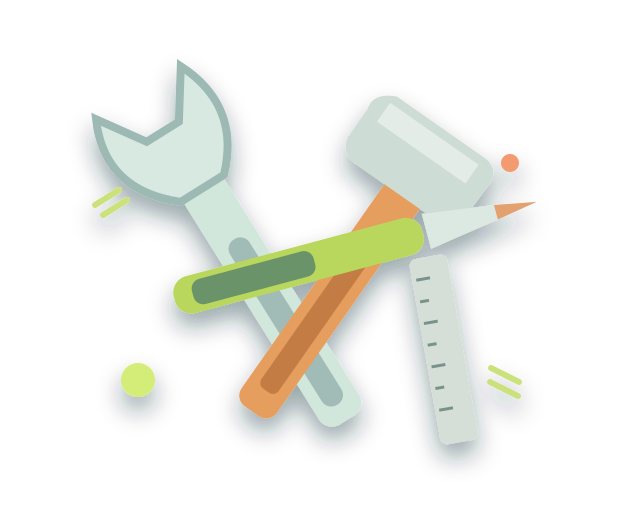

⌂
FOUNDATIONความหมายและความสำคัญ
เข้าใจพื้นฐานของงานช่างและประโยชน์ต่อชีวิตประจำวัน
เรียนรู้งานช่างอย่างเข้าใจ ฝึกคิดอย่างเป็นระบบ ใช้เครื่องมืออย่างปลอดภัย และนำทักษะไปใช้ในชีวิตจริง

BUILDงานช่าง คือ งานที่เกี่ยวข้องกับการสร้าง ประกอบ ติดตั้ง ซ่อมแซม และบำรุงรักษาสิ่งของ เครื่องมือ หรืออุปกรณ์ โดยอาศัยความรู้ ทักษะ และความปลอดภัย
ทักษะเหล่านี้ช่วยแก้ปัญหาในชีวิตประจำวัน ใช้ทรัพยากรอย่างคุ้มค่า และต่อยอดสู่อาชีพได้
เลือกหัวข้อที่สนใจ แล้วกดอ่านรายละเอียดเพื่อเรียนรู้ทีละขั้นตอน
เข้าใจพื้นฐานของงานช่างและประโยชน์ต่อชีวิตประจำวัน
ทำความรู้จักงานช่างไม้ งานไฟฟ้า งานประปา และงานโลหะ
เลือกเครื่องมือให้ถูกประเภท ตรวจสภาพ และดูแลหลังใช้งาน
ฝึกวางแผน ปฏิบัติ ตรวจสอบ และปรับปรุงผลงาน
ความปลอดภัยไม่ใช่ทางเลือก แต่เป็นจุดเริ่มต้นของช่างที่ดี
ทบทวนด้วยแบบทดสอบ ↗ตรวจสอบเครื่องมือและพื้นที่ทำงานก่อนเริ่มทุกครั้ง
สวมอุปกรณ์ป้องกันที่เหมาะสม เช่น แว่นตาและรองเท้าหุ้มส้น
ปิดแหล่งจ่ายไฟก่อนตรวจหรือซ่อมอุปกรณ์ไฟฟ้า และให้ผู้ชำนาญดูแล
เก็บเครื่องมือให้เรียบร้อย และแจ้งครูเมื่อพบความเสี่ยง
แบบทดสอบปรนัย 10 ข้อ ข้อละ 1 คะแนน พร้อมผลคะแนนและคำอธิบายหลังส่งคำตอบ
เลือกคำตอบที่ถูกต้องที่สุดเพียงข้อเดียวในแต่ละคำถาม คุณสามารถกลับมาทำใหม่ได้เสมอ